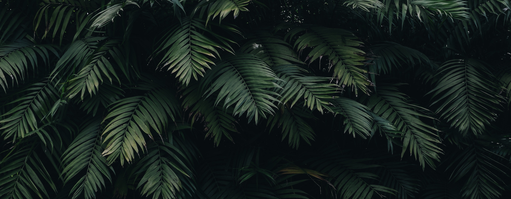

nadiah
hanim
Hi! I am Nadiah Binti Mohd Hanim
Matric No.: A19EC0111
Location: Skudai, Johor
Phone Number: 012-7966648
Email: nadiah.mh@graduate.utm.my

About Me
Hi! I am Nadiah Binti Mohd Hanim
Matric No. : A19EC0111
Location : Skudai, Johor
Email : nadiah.mh@graduate.utm.my
"
Hope ?
It breeds eternal
misery